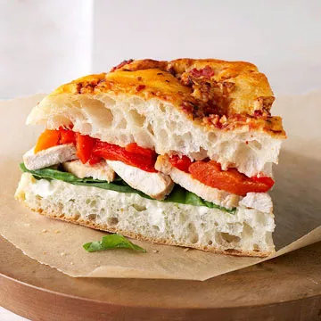

Make a delicious, giant Chicken Focaccia Sandwich packed with melty cheese, creamy sun-dried tomato aioli, tender chicken, and fresh greens.
Preheat your oven to 400F (200C).
Slice the focaccia loaf horizontally in half with a serrated knife.
Drizzle the cut sides with olive oil and place them face-up on a parchment-lined baking sheet. Toast for 5 to 7 minutes until lightly golden and crisp.
In a small bowl, stir together the mayonnaise and sun-dried tomato pesto. Spread a generous layer of this aioli over both toasted halves of the focaccia.
Scatter a layer of your sliced cheese across both halves.
Place the sliced chicken evenly across the bottom half of the focaccia.
Top the chicken with the thinly sliced red onions.
Return both the bottom half (with chicken/onions) and the top cheesy half to the oven for about 8 minutes, until the cheese is completely melted and the chicken is warmed through.
Layer the dried tomato slices over the onions and season them lightly with salt, pepper, and herbs.
Add a fresh pile of arugula or microgreens with a tiny drizzle of olive oil.
Gently place the cheesy top half of the focaccia onto the sandwich.
Press down gently, cut into large portions, and serve warm.